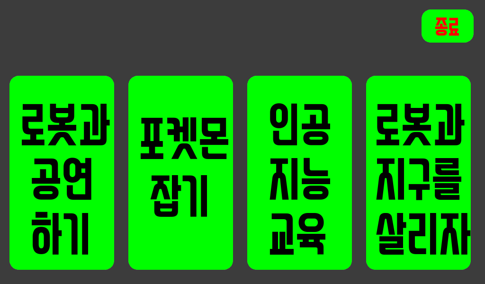

Before you get AI training…
Follow along: Before Starting
- Ensure the camera and screen display containers are properly shutting down.
- If the camera does not work or the screen display is obstructing your view, check whether the respective containers are running.
- If the camera is currently in use by another program, you won't be able to use it for the current AI training. Therefore, you need to stop its operation on the other program first.
- When performing AI training, the screen display must be turned off to avoid hiding the essential information and visuals you need for the training.
Initial work
{kind=link}
First, select “인공지능교욱” from the robot’s home screen.
{kind=link}
The following screen appears.
{kind=link}
If you press the “이전” button
{kind=link}
Return to the first screen.
We have to press the “start” button.
{kind=link}
If you press the “start” button. It starts the countdown.
{kind=link}
After that, there is a background image.
{kind=link}
If you double-touch the AI icon, the robot will be ready for AI training.
{kind=link}
Closed camera
Open Browser and connect to “10.42.0.1:5000”.
{kind=link}
Currently, the camera may be in use by another program.
We need to shut down the container that is currently using the camera in order to utilize it in our AI training.
Click the “zetabankhub/edu:melodic-l4t-csi-” in green text.
{kind=link}
If the container is in RUNNING state, press stop and wait for a while.
The “zetabankhub/edu:melodic-l4t-csi-” text turns white when the container is shutting down.
{kind=link}
Now, you can utilize the JupyterHub to proceed with your AI training using the camera.
Remember, the camera is now exclusively available for this purpose and your AI training information and visuals are clearly visible.
Conversely, if you want to use the camera again with the initial program, you can start the “zetabankhub/edu:melodic-l4t-csi-” container.